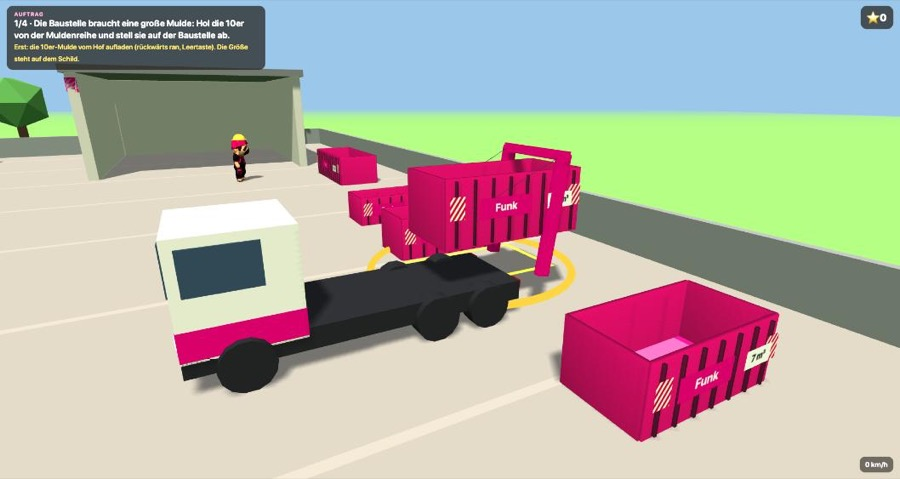

Vier Entwürfe
Tippe auf ein Bild, um den Entwurf groß zu sehen. Dann ein Klick: gefällt mir, geht so, eher nicht – und wenn du magst, ein paar Worte dazu.
Die Seite über deinen Vater
Nur wenn du magst – und erst, wenn du so weit bist. Dieselbe Seite in drei Fassungen, nur für dich sichtbar. Du entscheidest, ob, wann und wie viel davon auf die Webseite kommt.
So könnte eure App aussehen 📱
Drei Handys an einem Tag: zwei Fahrer und du im Büro. Tippe bei einem Fahrer – und schau, was rechts bei dir ankommt. Die Kunden sind erfunden, die Orte echt.
Du gibst die Tour, der Fahrer übernimmt mit einem Knopf – mit Karte.
Immer nur „das jetzt“. Zwei Knöpfe: Foto – fertig, oder: geht nicht.
Gestellt, abgeholt, abgekippt: Du siehst es sofort, mit Zeit und Ort.
Und noch etwas für deinen Sohn 🎁
Ein kleines Geschenk von uns – für Regentage und Hausarrest.

Der Juniorchef fährt den rosa Absetzkipper
Mulden holen, genau absetzen, rückwärts in die Halle – mit Rückfahrwarner, Ketten am Haken und euren Möpsen auf dem Hof. Die Aufträge nennen die echten Größen: 5er, 7er, 10er.
Neu: ein Tour-Handy zeigt den Weg, und bei jedem Auftrag geht ein Beweisfoto an dich ins Büro – mit Anrufen von Nachbarn und Kunden, bei denen das Foto alles klärt. So, wie es später die App kann.
Am Computer: Pfeiltasten und Leertaste. Auf dem Tablet: Knöpfe auf dem Bildschirm.
Texte für die Startseite
So stehen die Texte im Vorschlag. Ändere sie einfach so, wie du sie haben möchtest, und tippe auf „Speichern“. Ganze Sätze, Stichworte, beides ist gut.
Fotos
Fotos vom Handy hochladen oder ein Bild einfügen (kopieren und hier einfügen). Sag kurz, wofür das Bild ist. Die Bilder werden vor dem Senden verkleinert.
Bilder hierher ziehen oder
Auf dem Computer kannst du ein kopiertes Bild auch mit Strg/⌘ + V einfügen.
Für die App: Touren, Container, Mannschaft
Für die Container- und Tourenplaner-App, die wir auf dem Schirm haben. Fülle aus, was du weißt – Lücken sind kein Problem. Grobe Zahlen reichen.
Was du schon geschickt hast
Alles, was hier ankommt, sieht Andreas. „übernommen“ heißt: ist eingebaut.